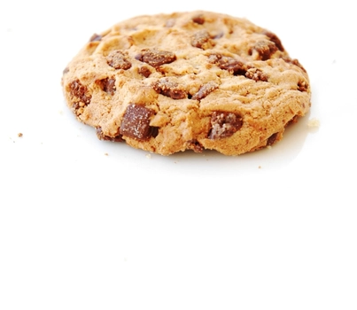

Chocolate Chip Cookie
Home

Description
This is the famous Neiman Marcus Chocolate Chip Cookie Recipe. There has
been a myth that someone was charged $250 for the recipe, but that was
never true.
This is now their official cookie recipe, and it's free to everyone.
Ingredients
- ½ cup unsalted butter
- 1 cup packed brown sugar
- 3 tablespoons white sugar
- 1 egg
- 2 teaspoons vanilla extract
- 1 ¾ cups all-purpose flour
- ½ teaspoon baking soda
- ½ teaspoon baking powder
- ½ teaspoon salt
- 1 ½ teaspoons instant espresso coffee powder
- 1 ½ cups semisweet chocolate chips
-
Preheat oven to 375 degrees F (190 degrees C). Grease a cookie sheet.
-
In a medium bowl, cream together the butter, brown sugar and white sugar
until smooth. Beat in the egg and vanilla. Sift together the flour,
baking soda, baking powder, salt and espresso powder; stir into the
creamed mixture. Finally, stir in the chocolate chips.
-
Drop dough by heaping tablespoonfuls onto the prepared baking sheet.
Cookies should be 1 1/2 to 2 inches apart. You should have 12 to 15
large cookies.
-
Bake for 8 to 10 minutes in the preheated oven. For crispier cookies,
bake 2 minutes longer. Remove from baking sheets to cool on wire racks.
OriginalRecipe